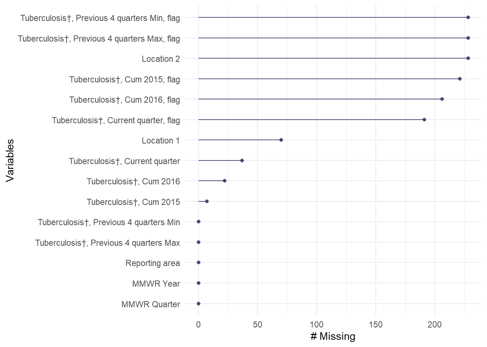
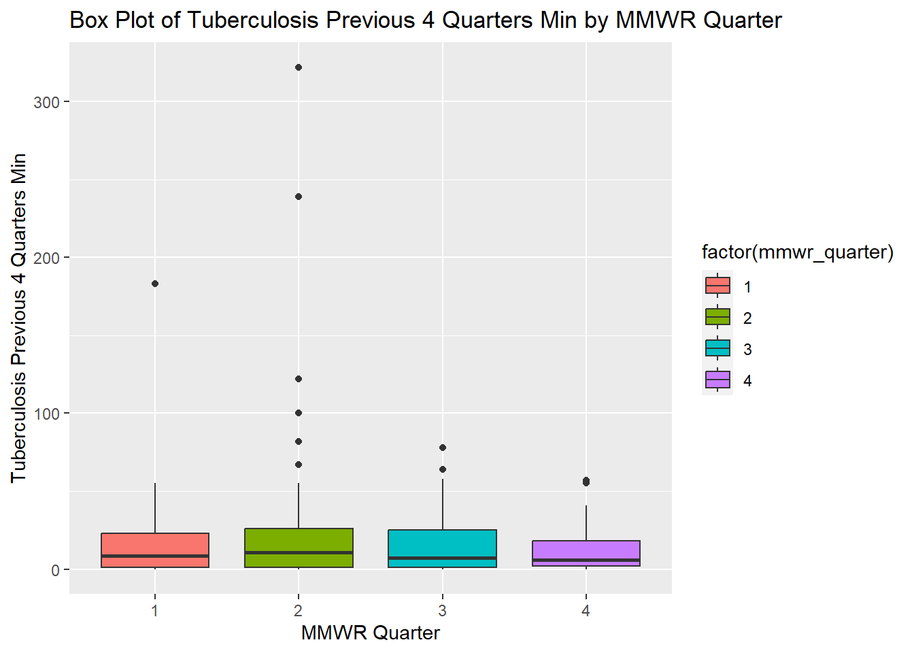
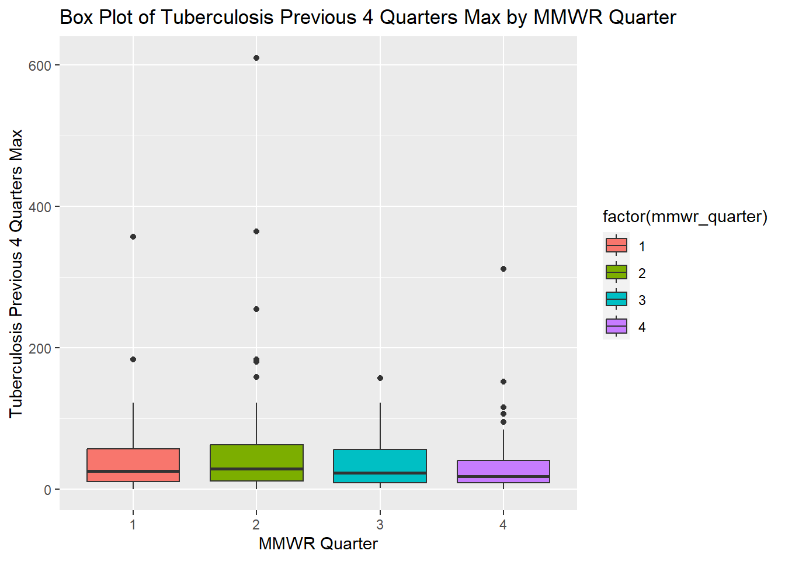
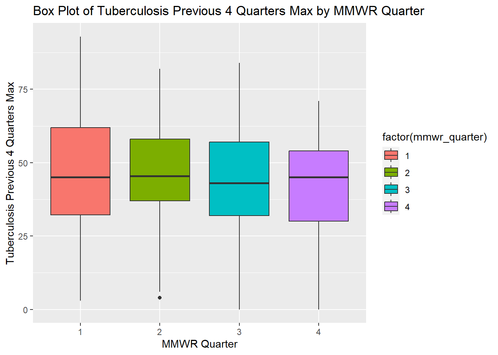

Warning: package 'tidyverse' was built under R version 4.3.2
Warning: package 'ggplot2' was built under R version 4.3.2
Warning: package 'purrr' was built under R version 4.3.2
Warning: package 'dplyr' was built under R version 4.3.2
Warning: package 'stringr' was built under R version 4.3.2
── Attaching core tidyverse packages ──────────────────────── tidyverse 2.0.0 ──
✔ dplyr 1.1.4 ✔ readr 2.1.4
✔ forcats 1.0.0 ✔ stringr 1.5.1
✔ ggplot2 3.4.4 ✔ tibble 3.2.1
✔ lubridate 1.9.2 ✔ tidyr 1.3.0
✔ purrr 1.0.2
── Conflicts ────────────────────────────────────────── tidyverse_conflicts() ──
✖ dplyr::filter() masks stats::filter()
✖ dplyr::lag() masks stats::lag()
ℹ Use the conflicted package (<http://conflicted.r-lib.org/>) to force all conflicts to become errors
library(ggplot2)library(readr)library(gridExtra) # for arranging plots
Attaching package: 'gridExtra'
The following object is masked from 'package:dplyr':
combine
Data Description
The dataset, titled “NNDSS Table II. Tuberculosis - 2019”, is sourced from the Centers for Disease Control and Prevention (CDC) through their data portal. It contains information on tuberculosis cases reported in the United States for the year 2019. The data is structured in tabular format and includes variables such as MMWR year, MMWR quarter, tuberculosis cases reported for the current quarter, previous four quarters, cumulative counts for specific years, and associated flags.
You can access the dataset and find more information about it on the CDC’s data portal using the following link:https://data.cdc.gov/NNDSS/NNDSS-Table-II-Tuberculosis/5avu-ff58/about_data ## Processing data
Data Exploration
#Importing the datasettb_data <-read_csv("tuberculosis.csv")
Rows: 228 Columns: 15
── Column specification ────────────────────────────────────────────────────────
Delimiter: ","
chr (5): Reporting area, Tuberculosis†, Current quarter, flag, Tuberculosis†...
dbl (7): MMWR Year, MMWR Quarter, Tuberculosis†, Current quarter, Tuberculos...
lgl (3): Tuberculosis†, Previous 4 quarters Min, flag, Tuberculosis†, Previo...
ℹ Use `spec()` to retrieve the full column specification for this data.
ℹ Specify the column types or set `show_col_types = FALSE` to quiet this message.
# View the first few rows of the datasethead(tb_data)
# A tibble: 6 × 15
`Reporting area` `MMWR Year` `MMWR Quarter` `Tuberculosis†, Current quarter`
<chr> <dbl> <dbl> <dbl>
1 NEW ENGLAND 2016 1 40
2 CONNECTICUT 2016 1 4
3 MAINE 2016 1 5
4 MASSACHUSETTS 2016 1 28
5 NEW HAMPSHIRE 2016 1 NA
6 RHODE ISLAND 2016 1 3
# ℹ 11 more variables: `Tuberculosis†, Current quarter, flag` <chr>,
# `Tuberculosis†, Previous 4 quarters Min` <dbl>,
# `Tuberculosis†, Previous 4 quarters Min, flag` <lgl>,
# `Tuberculosis†, Previous 4 quarters Max` <dbl>,
# `Tuberculosis†, Previous 4 quarters Max, flag` <lgl>,
# `Tuberculosis†, Cum 2016` <dbl>, `Tuberculosis†, Cum 2016, flag` <chr>,
# `Tuberculosis†, Cum 2015` <dbl>, `Tuberculosis†, Cum 2015, flag` <chr>, …
#Assessing missing values using Naniar packagenaniar::gg_miss_var(tb_data)

Describing the Variables
1. MMWR Quarter: This column indicates the quarter within the MMWR year to which the data corresponds. Quarters are often divided into four segments: 1 (January to March), 2 (April to June), 3 (July to September), and 4 (October to December).
Tuberculosis†, Cum 2016: This variable represents the cumulative number of tuberculosis cases reported up to the year 2016.
Tuberculosis†, Cum 2015: This variable represents the cumulative number of tuberculosis cases reported up to the year 2015.
Tuberculosis†, Previous 4 quarters Min: This column likely represents the minimum number of tuberculosis cases reported in the previous four quarters.
Tuberculosis†, Previous 4 quarters Max: This column likely represents the maximum number of tuberculosis cases reported in the previous four quarters.
# creating a new dataset from the above defined variable using subsetting and renaming the variables # Subset and rename variablesnewtb_data <- tb_data %>%subset(select =c("MMWR Quarter", "Tuberculosis†, Previous 4 quarters Min", "Tuberculosis†, Previous 4 quarters Max", "Tuberculosis†, Cum 2016", "Tuberculosis†, Cum 2015")) %>%rename("mmwr_quarter"="MMWR Quarter","tb_prev_4_q_min"="Tuberculosis†, Previous 4 quarters Min","tb_prev_4_q_max"="Tuberculosis†, Previous 4 quarters Max","tbcases_2016"="Tuberculosis†, Cum 2016","tbcases_2015"="Tuberculosis†, Cum 2015" )# Display the first few rows of the new data frame (newtb_data)head(newtb_data)
# Create a box plot of Tuberculosis Previous 4 Quarters Min by MMWR Quarterggplot(newtb_data, aes(x =factor(mmwr_quarter), y = tb_prev_4_q_min, fill =factor(mmwr_quarter))) +# Add a box plot layer with dodged positiongeom_boxplot(position =position_dodge(width =0.8)) +# Label the x-axis as "MMWR Quarter" and y-axis as "Tuberculosis Previous 4 Quarters Min"labs(x ="MMWR Quarter", y ="Tuberculosis Previous 4 Quarters Min",title ="Box Plot of Tuberculosis Previous 4 Quarters Min by MMWR Quarter")

# Create a box plot of Tuberculosis Previous 4 Quarters Max by MMWR Quarterggplot(newtb_data, aes(x =factor(mmwr_quarter), y = tb_prev_4_q_max, fill =factor(mmwr_quarter))) +# Add a box plot layer with dodged positiongeom_boxplot(position =position_dodge(width =10)) +# Label the x-axis as "MMWR Quarter" and y-axis as "Tuberculosis Previous 4 Quarters Max"labs(x ="MMWR Quarter", y ="Tuberculosis Previous 4 Quarters Max",title ="Box Plot of Tuberculosis Previous 4 Quarters Max by MMWR Quarter")

# Create a box plot of Tuberculosis Cases 2016 by MMWR Quarterggplot(newtb_data, aes(x =factor(mmwr_quarter), y = tbcases_2016, fill =factor(mmwr_quarter))) +# Add a box plot layer with dodged positiongeom_boxplot(position =position_dodge(width =10)) +# Label the x-axis as "MMWR Quarter" and y-axis as "Tuberculosis Cases 2016"labs(x ="MMWR Quarter", y ="Tuberculosis Cases 2016",title ="Box Plot of Tuberculosis Cases 2016 by MMWR Quarter")
# Create a box plot of Tuberculosis Cases 2015 by MMWR Quarterggplot(newtb_data, aes(x =factor(mmwr_quarter), y = tbcases_2015, fill =factor(mmwr_quarter))) +# Add a box plot layer with dodged positiongeom_boxplot(position =position_dodge(width =10)) +# Label the x-axis as "MMWR Quarter" and y-axis as "Tuberculosis Cases 2015"labs(x ="MMWR Quarter", y ="Tuberculosis Cases 2015",title ="Box Plot of Tuberculosis Cases 2015 by MMWR Quarter")
mmwr_quarter tb_prev_4_q_min tb_prev_4_q_max tbcases_2016
1:58 Min. : 0.00 Min. : 0.00 Min. : 1.00
2:62 1st Qu.: 1.00 1st Qu.: 10.00 1st Qu.: 12.00
3:57 Median : 8.00 Median : 24.00 Median : 33.00
4:51 Mean : 18.15 Mean : 44.82 Mean : 67.33
3rd Qu.: 25.00 3rd Qu.: 57.00 3rd Qu.: 79.00
Max. :322.00 Max. :610.00 Max. :735.00
NA's :22
tbcases_2015
Min. : 1.00
1st Qu.: 12.00
Median : 36.00
Mean : 80.31
3rd Qu.: 90.00
Max. :1331.00
NA's :7
This section is contributed by Ranni Tewfik.
Part 1 - Generating the Synthetic Dataset
#Explore the five variables in the original processed datatable(newtb_data$mmwr_quarter)
1 2 3 4
58 62 57 51
summary(newtb_data$tb_prev_4_q_min)
Min. 1st Qu. Median Mean 3rd Qu. Max.
0.00 1.00 8.00 18.15 25.00 322.00
summary(newtb_data$tb_prev_4_q_max)
Min. 1st Qu. Median Mean 3rd Qu. Max.
0.00 10.00 24.00 44.82 57.00 610.00
summary(newtb_data$tbcases_2016)
Min. 1st Qu. Median Mean 3rd Qu. Max. NA's
1.00 12.00 33.00 67.33 79.00 735.00 22
summary(newtb_data$tbcases_2015)
Min. 1st Qu. Median Mean 3rd Qu. Max. NA's
1.00 12.00 36.00 80.31 90.00 1331.00 7
#Load required R packagelibrary(dplyr)#Set seed for reproducibilityset.seed(123)#Define number of individuals for each mmwr_quarter levelmmwr_quarter_levels <-c(rep(1, 58), rep(2, 62), rep(3, 57), rep(4, 51))#Generate mmwr_quarter variablemmwr_quarter <-factor(sample(mmwr_quarter_levels))#Generate other variables based on specified distributionstb_prev_4_q_min <-round(rnorm(228, mean =18.15, sd =10))tb_prev_4_q_min <-pmax(tb_prev_4_q_min, 0)tb_prev_4_q_max <-round(rnorm(228, mean =44.82, sd =20))tb_prev_4_q_max <-pmax(tb_prev_4_q_max, 0)tb_cases_2016 <-round(rnorm(228, mean =67.33, sd =50))tb_cases_2016 <-pmax(tb_cases_2016, 1)tb_cases_2016[sample(1:228, 22)] <-NAtb_cases_2015 <-round(rnorm(228, mean =80.31, sd =60))tb_cases_2015 <-pmax(tb_cases_2015, 1)tb_cases_2015[sample(1:228, 7)] <-NA#Create the synthetic datasetnewtb_data_rt <-data.frame(mmwr_quarter = mmwr_quarter,tb_prev_4_q_min = tb_prev_4_q_min,tb_prev_4_q_max = tb_prev_4_q_max,tb_cases_2016 = tb_cases_2016,tb_cases_2015 = tb_cases_2015)#Get an overview and summary of the datastr(newtb_data_rt)
mmwr_quarter tb_prev_4_q_min tb_prev_4_q_max tb_cases_2016 tb_cases_2015
1:58 Min. : 0.00 Min. : 0.00 Min. : 1.00 Min. : 1.00
2:62 1st Qu.:12.00 1st Qu.:32.75 1st Qu.: 31.00 1st Qu.: 38.00
3:57 Median :18.00 Median :44.50 Median : 68.00 Median : 79.00
4:51 Mean :18.79 Mean :44.89 Mean : 68.55 Mean : 82.16
3rd Qu.:25.00 3rd Qu.:58.25 3rd Qu.: 99.00 3rd Qu.:123.00
Max. :51.00 Max. :93.00 Max. :202.00 Max. :242.00
NA's :22 NA's :7
First, I explored the original processed dataset “newtb_data” to better understand the variables and their distributions. I used ChatGPT to help me produce the synthetic dataset “newtb_data_rt” with the same structure as “newtb_data”.
ChatGPT prompt:
“Write R code that generates a dataset of 228 individuals with five variables: mmwr_quarter, tb_prev_4_q_min, tb_prev_4_q_max, tbcases_2016, and tbcases_2015. The variable mmwr_quarter is a factor variable and has four levels: level 1 with 58 individuals, level 2 with 62 individuals, level 3 with 57 individuals, and level 4 with 51 individuals. The variable tb_prev_4_q_min is numerical with whole integers ranging from 0 to 322, median is 8, and mean is 18.15. The variable tb_prev_4_q_max is numerical with whole integers ranging from 0 to 610, median is 24, and mean is 44.82. The variable tb_cases_2016 is numerical with whole integers ranging from 1 to 735, median is 33, mean is 67.33, and 22 individuals with missing value. The variable tb_cases_2015 is numerical with whole integers ranging from 1 to 1331, median is 36, mean is 80.31, and 7 individuals with missing value. Add thorough documentation to the R code.”
Part 2 - Exploring the Synthetic Dataset
# Create histograms for each variablehistograms <-list(# Histogram for Tuberculosis Previous 4 Quarters Minggplot(newtb_data_rt, aes(x = tb_prev_4_q_min)) +geom_histogram(fill ="blue", color ="black", bins =20) +labs(x ="Tuberculosis Previous 4 Quarters Min", y ="Frequency", title ="Histogram of Tuberculosis Previous 4 Quarters Min"),# Histogram for Tuberculosis Previous 4 Quarters Maxggplot(newtb_data_rt, aes(x = tb_prev_4_q_max)) +geom_histogram(fill ="blue", color ="black", bins =20) +labs(x ="Tuberculosis Previous 4 Quarters Max", y ="Frequency", title ="Histogram of Tuberculosis Previous 4 Quarters Max"),# Histogram for Tuberculosis Cases 2016ggplot(newtb_data_rt, aes(x = tb_cases_2016)) +geom_histogram(fill ="blue", color ="black", bins =20) +labs(x ="Tuberculosis Cases 2016", y ="Frequency", title ="Histogram of Tuberculosis Cases 2016"),# Histogram for Tuberculosis Cases 2015ggplot(newtb_data_rt, aes(x = tb_cases_2015)) +geom_histogram(fill ="blue", color ="black", bins =20) +labs(x ="Tuberculosis Cases 2015", y ="Frequency", title ="Histogram of Tuberculosis Cases 2015"))# Display histograms side by sidegrid.arrange(grobs = histograms, ncol =2)
The histograms for the variables “tb_prev_4_q_min” and “tb_prev_4_q_max” show an approximately normal distribution, but the histograms for the variables “tb_cases_2016” and “tb_cases_2015” do not show an approximately normal distribution. The histograms in the new synthetic dataset look slightly similar to the histograms in the original processed dataset for the variables “tb_cases_2016” and “tb_cases_2015” but not for the variables “tb_prev_4_q_min” and “tb_prev_4_q_max”.
# Create a box plot of Tuberculosis Previous 4 Quarters Min by MMWR Quarterggplot(newtb_data_rt, aes(x =factor(mmwr_quarter), y = tb_prev_4_q_min, fill =factor(mmwr_quarter))) +# Add a box plot layer with dodged positiongeom_boxplot(position =position_dodge(width =0.8)) +# Label the x-axis as "MMWR Quarter" and y-axis as "Tuberculosis Previous 4 Quarters Min"labs(x ="MMWR Quarter", y ="Tuberculosis Previous 4 Quarters Min",title ="Box Plot of Tuberculosis Previous 4 Quarters Min by MMWR Quarter")
The box plots for tuberculosis for the previous four MMWR quarters (min) show an approximately normal distribution, however, MMWR Quarters 3 and 4 are slightly positively skewed. The box plots in the original processed dataset have more positive skew and more outliers compared with the box plots in the new synthetic data set.
# Create a box plot of Tuberculosis Previous 4 Quarters Max by MMWR Quarterggplot(newtb_data_rt, aes(x =factor(mmwr_quarter), y = tb_prev_4_q_max, fill =factor(mmwr_quarter))) +# Add a box plot layer with dodged positiongeom_boxplot(position =position_dodge(width =10)) +# Label the x-axis as "MMWR Quarter" and y-axis as "Tuberculosis Previous 4 Quarters Max"labs(x ="MMWR Quarter", y ="Tuberculosis Previous 4 Quarters Max",title ="Box Plot of Tuberculosis Previous 4 Quarters Max by MMWR Quarter")

The box plots for tuberculosis for the previous four MMWR quarters (max) show an approximately normal distribution. The box plots in the original processed dataset have more positive skew and more outliers compared with the box plots in the new synthetic data set.
# Create a box plot of Tuberculosis Cases 2016 by MMWR Quarterggplot(newtb_data_rt, aes(x =factor(mmwr_quarter), y = tb_cases_2016, fill =factor(mmwr_quarter))) +# Add a box plot layer with dodged positiongeom_boxplot(position =position_dodge(width =10)) +# Label the x-axis as "MMWR Quarter" and y-axis as "Tuberculosis Cases 2016"labs(x ="MMWR Quarter", y ="Tuberculosis Cases 2016",title ="Box Plot of Tuberculosis Cases 2016 by MMWR Quarter")
The box plots for tuberculosis cases in 2016 for different MMWR quarters are positively skewed with some outliers. The box plots in the new synthetic dataset are somewhat similar to the box plots in the original processed dataset.
# Create a box plot of Tuberculosis Cases 2015 by MMWR Quarterggplot(newtb_data_rt, aes(x =factor(mmwr_quarter), y = tb_cases_2015, fill =factor(mmwr_quarter))) +# Add a box plot layer with dodged positiongeom_boxplot(position =position_dodge(width =10)) +# Label the x-axis as "MMWR Quarter" and y-axis as "Tuberculosis Cases 2015"labs(x ="MMWR Quarter", y ="Tuberculosis Cases 2015",title ="Box Plot of Tuberculosis Cases 2015 by MMWR Quarter")
The box plots for tuberculosis cases in 2015 for different MMWR quarters show an approximate normal distribution. The box plots in the new synthetic dataset are not similar to the box plots in the original processed dataset.